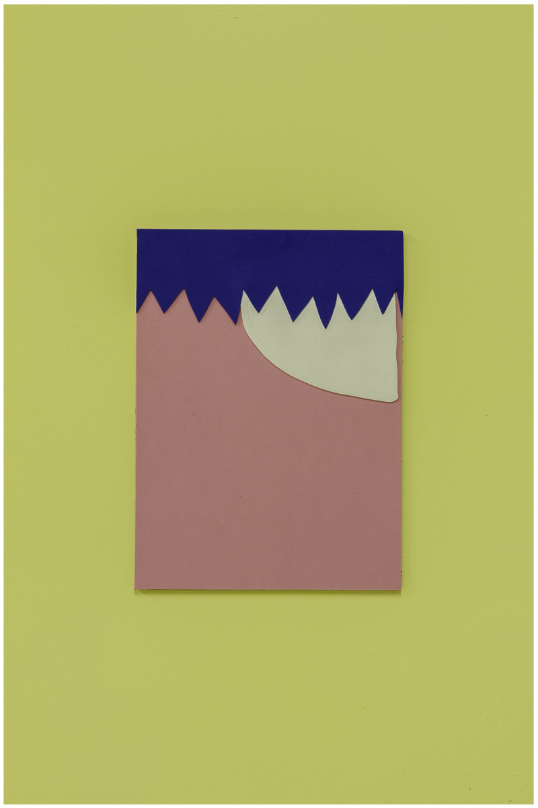

About Dave
Dave was born in Virgina and went to school at Virginia Commonwealth University where he studied Art. He now lives in Austin Texas with his wife Emily and son Oscar.
November Sunburn, HOTCROSS
Recent Shows
- "That's Not Goin' Anywhere" CoLab Projects, Austin TX
- "Time Flies Like An Arrow, Fruit Flies Like a Banana" GrayDuck Gallery, Austin TX
- "HOTCROSS" Mrs.Bairds Bread Outlet, Austin TX
Dave's Other Projects
Click Links Below